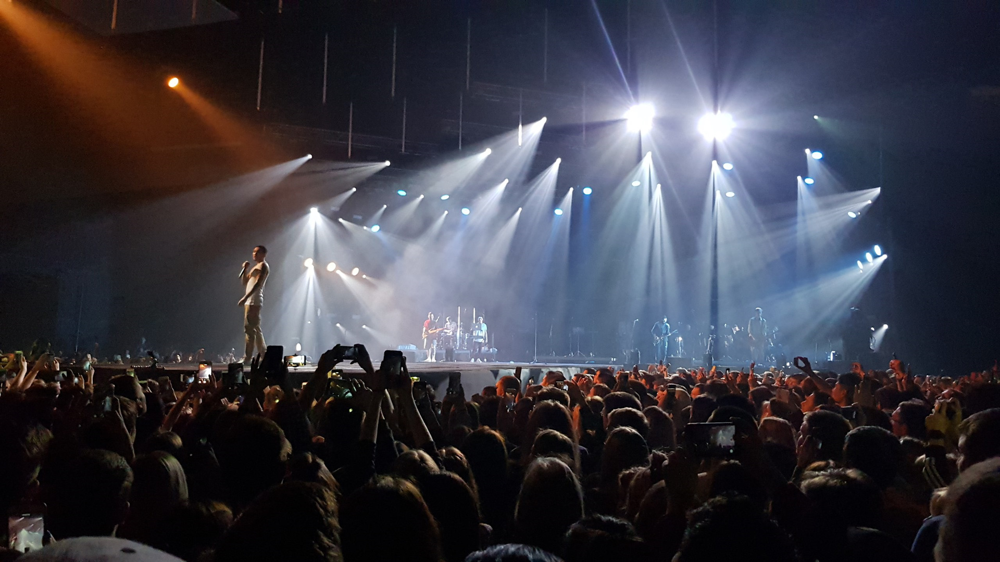

О нас

Концертный тур в поддержку выхода альбома «2004».
Пятый студийный альбом казахстанского музыканта Скриптонита, выпущенный 24 декабря 2019 года на лейбле Musica36. Сначала альбом появился эксклюзивно на Apple Music, на других площадках был издан 28 января 2020 года. На альбоме много интерлюдий и скитов; некоторые композиции исполняются другими музыкантами отдельно или вместе со Скриптонитом, в числе гостей 104, Райда, M’Dee, Andy Panda и Truwer. 2004 стал первым сольным проектом Адиля с 2017 года после альбома «Уроборос». Презентация альбома должна была пройти 10 апреля 2020 года в Москве, в Adrenaline Stadium; из-за пандемии COVID-19 концерт был перенесён на 5 июня
Музыканты

/flo-rida-597fdbf5685fbe00116f7ae9.jpg)